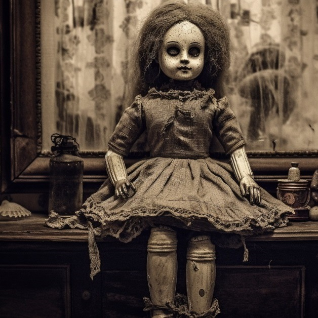
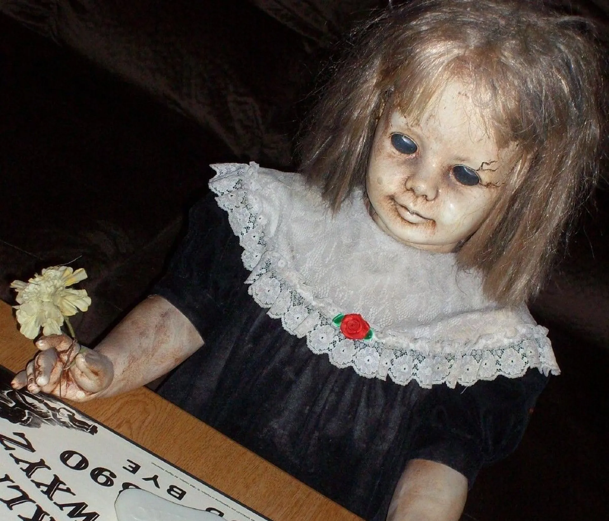
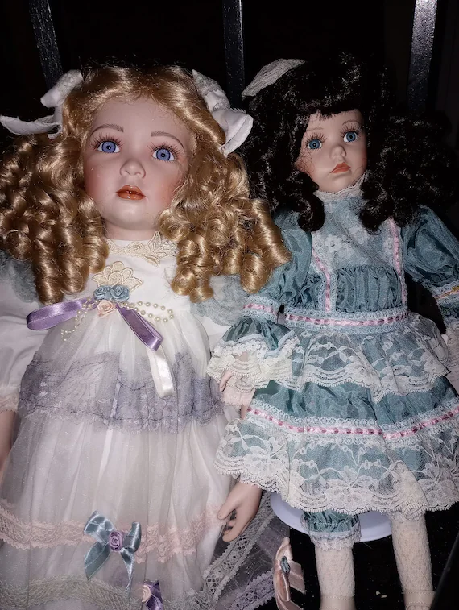

In the dim light of a quiet room, a porcelain doll rests on a weathered wooden table. Its glassy eyes seem to stare fixedly, its unmoving face displaying a static smile. The soft glow of a lamp casts ghostly shadows that animate the inert figure. Those who gaze upon it feel an inexplicable presence, as if the doll harbors ancient and dark secrets within its fragile and delicate form.

Amidst the cobwebs of an abandoned attic, a vintage doll sits perched on an old rocking chair. Dusty sunlight filters through the cracked window, illuminating its faded dress and worn porcelain features. The doll's unblinking eyes seem to hold a melancholic gaze, as if longing for a forgotten past. The air is heavy with the weight of untold stories, echoing whispers of bygone days.

In the corner of a forgotten toy room, a marionette dangles from tangled strings, its painted face frozen in a perpetual grin. Moonlight filters through dusty windows, casting eerie shadows that dance around the lifeless puppet. The air is thick with a sense of foreboding, as if the marionette waits patiently for its strings to be pulled once more, invoking a haunting melody from ages past.